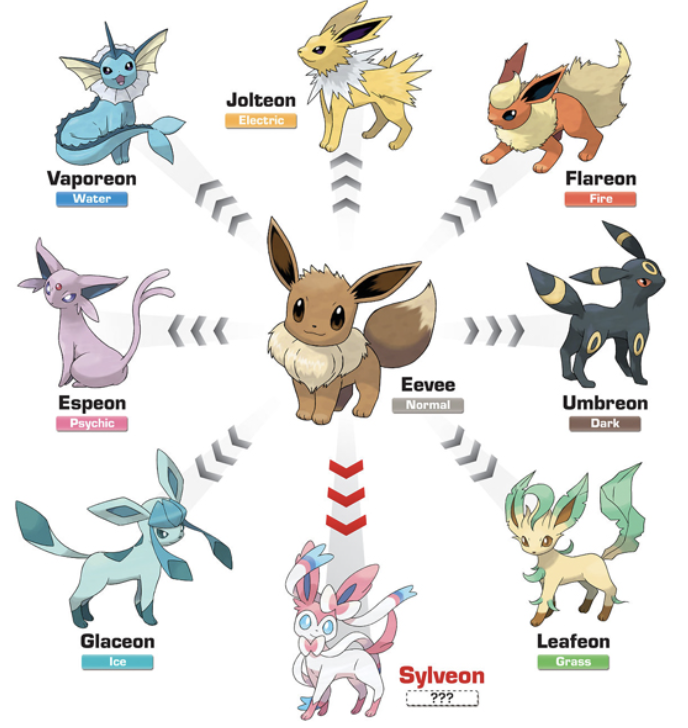

Evoluções dos Pokemon
A evolução é uma das mecânicas centrais da franquia Pokémon, permitindo que as criaturas se tornem mais fortes e, muitas vezes, mudem completamente de aparência. Esse processo pode ocorrer de diversas formas, como ao atingir determinado nível, usar itens especiais ou desenvolver uma alta amizade com o treinador. A evolução não apenas aumenta os atributos do Pokémon, mas também pode desbloquear novos golpes e habilidades, tornando as batalhas mais estratégicas. Algumas evoluções se tornaram icônicas ao longo dos anos, como a transformação de Charmander em Charizard ou de Magikarp em Gyarados. Essas mudanças mostram o crescimento do Pokémon durante a jornada, reforçando a sensação de progresso do jogador. Esse sistema também incentiva o treinamento e a experimentação com diferentes equipes.
